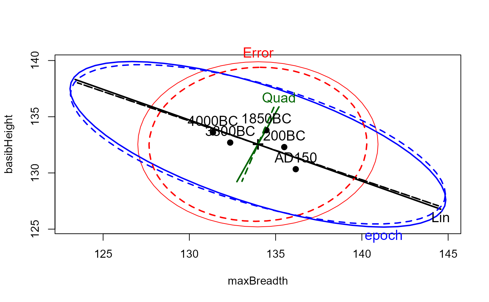
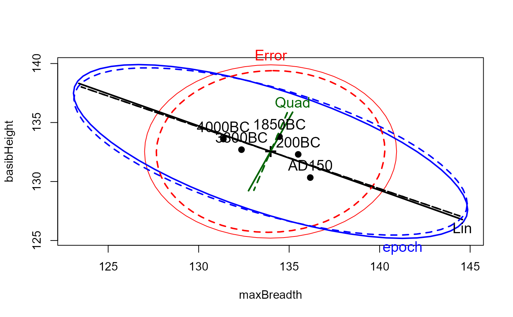
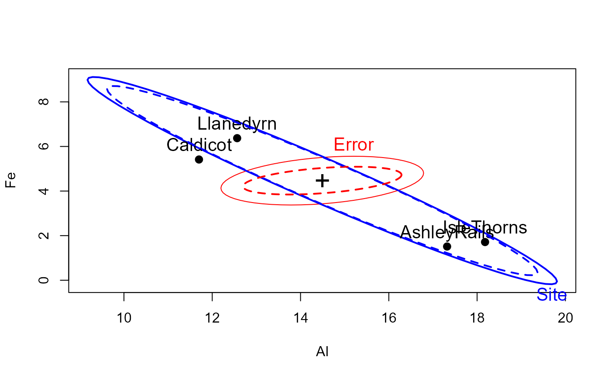
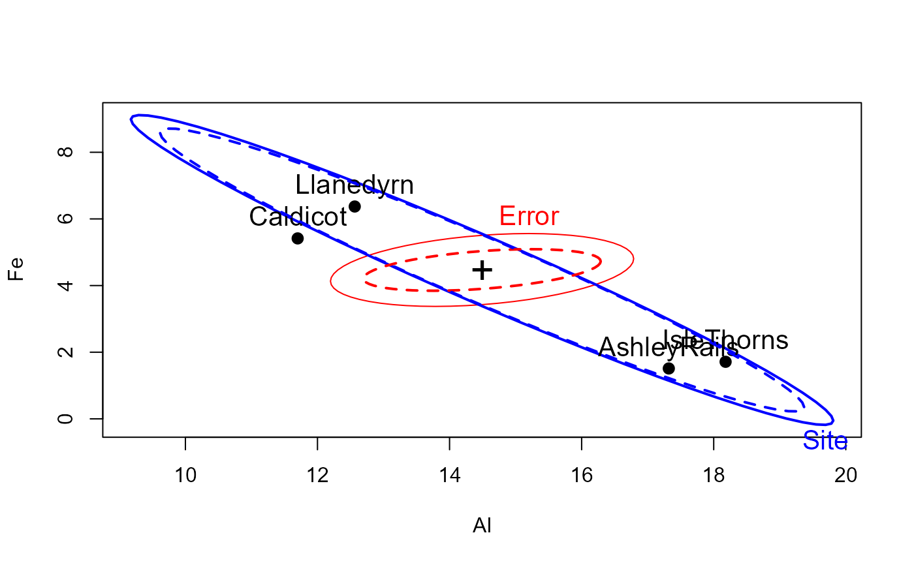

Fit a multivariate linear model by robust regression using a simple M estimator.
Usage
robmlm(X, ...)
# Default S3 method
robmlm(
X,
Y,
w,
P = 2 * pnorm(4.685, lower.tail = FALSE),
tune,
max.iter = 100,
psi = psi.bisquare,
tol = 1e-06,
initialize,
verbose = FALSE,
...
)
# S3 method for class 'formula'
robmlm(
formula,
data,
subset,
weights,
na.action,
model = TRUE,
contrasts = NULL,
...
)
# S3 method for class 'robmlm'
print(x, ...)
# S3 method for class 'robmlm'
summary(object, ...)
# S3 method for class 'summary.robmlm'
print(x, ...)Arguments
- X
for the default method, a model matrix, including the constant (if present)
- ...
other arguments, passed down. In particular relevant control arguments can be passed to the to the
robmlm.defaultmethod.- Y
for the default method, a response matrix
- w
prior weights
- P
two-tail probability, to find cutoff quantile for chisq (tuning constant); default is set for bisquare weight function
- tune
tuning constant (if given directly)
- max.iter
maximum number of iterations
- psi
robustness weight function;
psi.bisquareis the default- tol
convergence tolerance, maximum relative change in coefficients
- initialize
modeling function to find start values for coefficients, equation-by-equation; if absent WLS (
lm.wfit) is used- verbose
show iteration history? (
TRUEorFALSE)- formula
a formula of the form
cbind(y1, y2, ...) ~ x1 + x2 + ....- data
a data frame from which variables specified in
formulaare preferentially to be taken.- subset
An index vector specifying the cases to be used in fitting.
- weights
a vector of prior weights for each case.
- na.action
A function to specify the action to be taken if
NAs are found. The 'factory-fresh' default action in R isna.omit, and can be changed byoptions(na.action=).- model
should the model frame be returned in the object?
- contrasts
optional contrast specifications; see
lmfor details.- x
a
robmlmobject- object
a
robmlmobject
Value
An object of class "robmlm" inheriting from c("mlm",
"lm").
This means that the returned "robmlm" contains all the components of
"mlm" objects described for lm, plus the
following:
- weights
final observation weights
- iterations
number of iterations
- converged
logical: did the IWLS process converge?
The generic accessor functions coefficients,
effects, fitted.values and
residuals extract various useful features of the value
returned by robmlm.
Details
These S3 methods are designed to provide a specification of a class of
robust methods which extend mlms, and are therefore compatible with
other mlm extensions, including Anova and
heplot.
Fitting is done by iterated re-weighted least squares (IWLS), using weights
based on the Mahalanobis squared distances of the current residuals from the
origin, and a scaling (covariance) matrix calculated by
cov.trob. The design of these methods were loosely
modeled on rlm.
An internal vcov.mlm function is an extension of the standard
vcov method providing for observation weights.
References
A. Marazzi (1993) Algorithms, Routines and S Functions for Robust Statistics. Wadsworth & Brooks/Cole.
Examples
##############
# Skulls data
# make shorter labels for epochs and nicer variable labels in heplots
Skulls$epoch <- factor(Skulls$epoch, labels=sub("c","",levels(Skulls$epoch)))
# variable labels
vlab <- c("maxBreadth", "basibHeight", "basialLength", "nasalHeight")
# fit manova model, classically and robustly
sk.mod <- lm(cbind(mb, bh, bl, nh) ~ epoch, data=Skulls)
sk.rmod <- robmlm(cbind(mb, bh, bl, nh) ~ epoch, data=Skulls)
# standard mlm methods apply here
coefficients(sk.rmod)
#> mb bh bl nh
#> (Intercept) 133.9539529 132.6656599 96.50561801 50.8900600
#> epoch.L 4.1659721 -2.1793681 -4.84240950 1.1168866
#> epoch.Q -0.3671411 -1.3069085 -0.04276618 0.2817763
#> epoch.C -0.5833713 -0.7912067 1.03002114 -0.8379419
#> epoch^4 0.6350148 0.8787857 -0.55919989 -0.6233314
# index plot of weights
plot(sk.rmod$weights, type="h", xlab="Case Index", ylab="Robust mlm weight", col="gray")
points(sk.rmod$weights, pch=16, col=Skulls$epoch)
axis(side=1, at=15+seq(0,120,30), labels=levels(Skulls$epoch), tick=FALSE, cex.axis=1)
 # heplots to see effect of robmlm vs. mlm
heplot(sk.mod, hypotheses=list(Lin="epoch.L", Quad="epoch.Q"),
xlab=vlab[1], ylab=vlab[2], cex=1.25, lty=1)
heplot(sk.rmod, hypotheses=list(Lin="epoch.L", Quad="epoch.Q"),
add=TRUE, error.ellipse=TRUE, lwd=c(2,2), lty=c(2,2),
term.labels=FALSE, hyp.labels=FALSE, err.label="")

##############
# Pottery data
data(Pottery, package = "carData")
pottery.mod <- lm(cbind(Al,Fe,Mg,Ca,Na)~Site, data=Pottery)
pottery.rmod <- robmlm(cbind(Al,Fe,Mg,Ca,Na)~Site, data=Pottery)
car::Anova(pottery.mod)
#>
#> Type II MANOVA Tests: Pillai test statistic
#> Df test stat approx F num Df den Df Pr(>F)
#> Site 3 1.5539 4.2984 15 60 2.413e-05 ***
#> ---
#> Signif. codes: 0 '***' 0.001 '**' 0.01 '*' 0.05 '.' 0.1 ' ' 1
car::Anova(pottery.rmod)
#>
#> Type II MANOVA Tests: Pillai test statistic
#> Df test stat approx F num Df den Df Pr(>F)
#> Site 3 1.975 6.5516 15 51 1.722e-07 ***
#> ---
#> Signif. codes: 0 '***' 0.001 '**' 0.01 '*' 0.05 '.' 0.1 ' ' 1
# index plot of weights
plot(pottery.rmod$weights, type="h")
points(pottery.rmod$weights, pch=16, col=Pottery$Site)
# heplots to see effect of robmlm vs. mlm
heplot(sk.mod, hypotheses=list(Lin="epoch.L", Quad="epoch.Q"),
xlab=vlab[1], ylab=vlab[2], cex=1.25, lty=1)
heplot(sk.rmod, hypotheses=list(Lin="epoch.L", Quad="epoch.Q"),
add=TRUE, error.ellipse=TRUE, lwd=c(2,2), lty=c(2,2),
term.labels=FALSE, hyp.labels=FALSE, err.label="")

##############
# Pottery data
data(Pottery, package = "carData")
pottery.mod <- lm(cbind(Al,Fe,Mg,Ca,Na)~Site, data=Pottery)
pottery.rmod <- robmlm(cbind(Al,Fe,Mg,Ca,Na)~Site, data=Pottery)
car::Anova(pottery.mod)
#>
#> Type II MANOVA Tests: Pillai test statistic
#> Df test stat approx F num Df den Df Pr(>F)
#> Site 3 1.5539 4.2984 15 60 2.413e-05 ***
#> ---
#> Signif. codes: 0 '***' 0.001 '**' 0.01 '*' 0.05 '.' 0.1 ' ' 1
car::Anova(pottery.rmod)
#>
#> Type II MANOVA Tests: Pillai test statistic
#> Df test stat approx F num Df den Df Pr(>F)
#> Site 3 1.975 6.5516 15 51 1.722e-07 ***
#> ---
#> Signif. codes: 0 '***' 0.001 '**' 0.01 '*' 0.05 '.' 0.1 ' ' 1
# index plot of weights
plot(pottery.rmod$weights, type="h")
points(pottery.rmod$weights, pch=16, col=Pottery$Site)
 # heplots to see effect of robmlm vs. mlm
heplot(pottery.mod, cex=1.3, lty=1)
heplot(pottery.rmod, add=TRUE, error.ellipse=TRUE, lwd=c(2,2), lty=c(2,2),
term.labels=FALSE, err.label="")

###############
# Prestige data
data(Prestige, package = "carData")
# treat women and prestige as response variables for this example
prestige.mod <- lm(cbind(women, prestige) ~ income + education + type, data=Prestige)
prestige.rmod <- robmlm(cbind(women, prestige) ~ income + education + type, data=Prestige)
coef(prestige.mod)
#> women prestige
#> (Intercept) 29.638865042 -0.622929165
#> income -0.004594789 0.001013193
#> education 1.677749298 3.673166052
#> typeprof 20.761455686 6.038970651
#> typewc 27.911084356 -2.737230718
coef(prestige.rmod)
#> women prestige
#> (Intercept) 24.696906731 0.019651597
#> income -0.004902077 0.001082214
#> education 2.352283991 3.549614674
#> typeprof 18.737098949 6.394466644
#> typewc 26.762870920 -2.570933052
# how much do coefficients change?
round(coef(prestige.mod) - coef(prestige.rmod),3)
#> women prestige
#> (Intercept) 4.942 -0.643
#> income 0.000 0.000
#> education -0.675 0.124
#> typeprof 2.024 -0.355
#> typewc 1.148 -0.166
# pretty plot of case weights
plot(prestige.rmod$weights, type="h", xlab="Case Index", ylab="Robust mlm weight", col="gray")
points(prestige.rmod$weights, pch=16, col=Prestige$type)
legend(0, 0.7, levels(Prestige$type), pch=16, col=palette()[1:3], bg="white")
# heplots to see effect of robmlm vs. mlm
heplot(pottery.mod, cex=1.3, lty=1)
heplot(pottery.rmod, add=TRUE, error.ellipse=TRUE, lwd=c(2,2), lty=c(2,2),
term.labels=FALSE, err.label="")

###############
# Prestige data
data(Prestige, package = "carData")
# treat women and prestige as response variables for this example
prestige.mod <- lm(cbind(women, prestige) ~ income + education + type, data=Prestige)
prestige.rmod <- robmlm(cbind(women, prestige) ~ income + education + type, data=Prestige)
coef(prestige.mod)
#> women prestige
#> (Intercept) 29.638865042 -0.622929165
#> income -0.004594789 0.001013193
#> education 1.677749298 3.673166052
#> typeprof 20.761455686 6.038970651
#> typewc 27.911084356 -2.737230718
coef(prestige.rmod)
#> women prestige
#> (Intercept) 24.696906731 0.019651597
#> income -0.004902077 0.001082214
#> education 2.352283991 3.549614674
#> typeprof 18.737098949 6.394466644
#> typewc 26.762870920 -2.570933052
# how much do coefficients change?
round(coef(prestige.mod) - coef(prestige.rmod),3)
#> women prestige
#> (Intercept) 4.942 -0.643
#> income 0.000 0.000
#> education -0.675 0.124
#> typeprof 2.024 -0.355
#> typewc 1.148 -0.166
# pretty plot of case weights
plot(prestige.rmod$weights, type="h", xlab="Case Index", ylab="Robust mlm weight", col="gray")
points(prestige.rmod$weights, pch=16, col=Prestige$type)
legend(0, 0.7, levels(Prestige$type), pch=16, col=palette()[1:3], bg="white")
 heplot(prestige.mod, cex=1.4, lty=1)
heplot(prestige.rmod, add=TRUE, error.ellipse=TRUE, lwd=c(2,2), lty=c(2,2),
term.labels=FALSE, err.label="")
heplot(prestige.mod, cex=1.4, lty=1)
heplot(prestige.rmod, add=TRUE, error.ellipse=TRUE, lwd=c(2,2), lty=c(2,2),
term.labels=FALSE, err.label="")